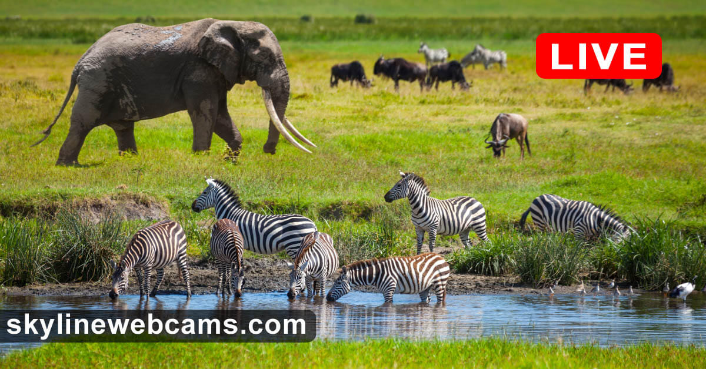
A waterhole in Tsavo East, lush and green. A single adult elephant dominates the left side of the frame, trunk raised slightly, feet at the water's edge. Behind it, a loose crowd of zebras -- maybe fifteen, maybe twenty -- stand in the grass, some drinking, some just standing. A few more animals blur into the middle distance: wildebeest, possibly more elephants. The whole frame hums with coexistence.
What strikes me immediately is the negotiation. Nobody is coordinating this gathering. The elephant doesn't organize the zebras. The zebras don't await permission. And yet there's a spatial grammar -- the elephant has the near water, the zebras cluster slightly further back. The distances between species aren't random. They're legible. There's a syntax of proximity that every body here reads fluently, and we've forgotten how to.
Remind: An open-plan office -- strangers negotiating shared resources through unspoken spatial rules
Metaphor: The waterhole is a protocol, not a place. The water is just the excuse. The real event is the negotiation of distance -- who approaches, who waits, who yields, who pretends not to notice whom
Idea: Every shared resource produces a choreography of attention. The animals at this waterhole are performing the most ancient version of what we do in every commons: reading each other's bodies to calibrate our own proximity. Attention isn't a cognitive luxury. It's survival infrastructure.
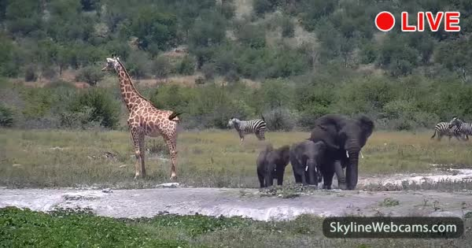
Another waterhole, but the composition is completely different. A single giraffe stands at the left, upright, its neck a vertical line against the horizontal landscape. To its right, a cluster of elephants -- three or four of them, their bodies darker, dustier, heavier. Behind them, in the scrub, the faint stripes of zebras. The brush is sparse. The land is drier here than Tsavo.
The giraffe changes everything. Its attention operates at a different altitude. While the elephants have their heads down, concerned with the immediate -- water, dust, the calf beside them -- the giraffe's eyes are six meters up, scanning a horizon the others cannot see. It's a sentry that nobody hired. Its body is literally a watchtower.
Remind: A company where the CEO and the floor workers inhabit entirely different informational landscapes, both present in the same building but seeing different threats
Metaphor: Height is an attention technology. The giraffe evolved its neck not just to reach leaves but to reach a different informational stratum. Its body is an instrument for perceiving at a scale the ground-dwellers cannot access
Idea: The waterhole protocol from Step 1 just got more complex. These animals don't just negotiate distance -- they negotiate altitude. The giraffe sees predators the elephants don't. The elephants sense vibrations the giraffe doesn't. They are sharing not just water but a perceptual commons -- each species contributing a different sensory bandwidth to the collective awareness.
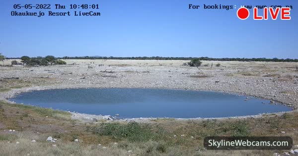
The first two waterholes were crowded. This one is almost empty. A perfect oval of blue water sits in a white limestone pan, the ground baked and pale. A few dark shapes at the far edge -- possibly springbok, possibly gemsbok, too distant to be certain. The sky is enormous. The waterhole looks like an eye in the skull of the earth.
The timestamp says 2022 but the image is timeless. This could be any century. The camera overlay text -- "For bookings: www.nwr.com.na" -- is the only evidence of the present era. The waterhole itself predates language. Predates primates. It has been a gathering point since before the concept of gathering existed.
Remind: An empty theater between performances. A classroom at 3am. A church on a Tuesday
Metaphor: The waterhole is always a waterhole, even when nobody is drinking. Its function persists in the interval. The absence of animals doesn't make it less of a commons -- it makes the commons visible as a structure rather than as a crowd
Idea: Absence is more revealing than presence. When the waterhole is crowded (Steps 1 and 2), you see the animals. When it's empty, you see the contract. You see the infrastructure of coexistence itself -- the shape of the agreement, the patient geometry of a place that says: come here, I will hold you all equally.
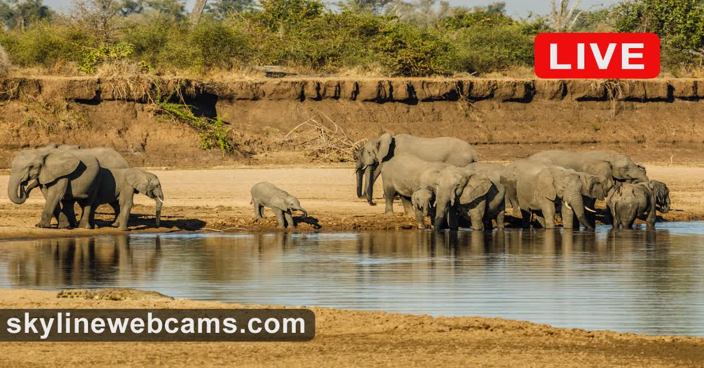
A herd of elephants, maybe twelve or fifteen, lined up along a riverbank. The light is golden -- late afternoon in the South Luangwa Valley. Some drink. Some stand. The calves are tucked between the adults. The water is muddy, wide, slow. The elephants are so close together their bodies almost touch.
After the loneliness of the Etosha pan, this density is startling. These animals are not just near each other -- they are choosing contact. The calves press against the legs of the adults. Trunks curl and intertwine. This is not the cautious multi-species distance of the earlier waterholes. This is family. The protocol here isn't about negotiating proximity with strangers -- it's about maintaining proximity with the known.
Remind: A family photograph -- the way people lean into each other, the unconscious choreography of bodies that trust each other completely
Metaphor: Touch is a different grammar than distance. Steps 1 through 3 were about the syntax of space between species. This is about the syntax of contact within a species -- where skin meets skin, where the boundary between individuals dissolves
Idea: There are two fundamental attentional modes in nature: the attention of vigilance (scanning for what is different, distant, dangerous) and the attention of care (sensing what is close, known, vulnerable). The giraffe's neck is vigilance architecture. The elephant's trunk curling around its calf is care architecture. Both are forms of noticing. But one watches outward and the other watches inward.
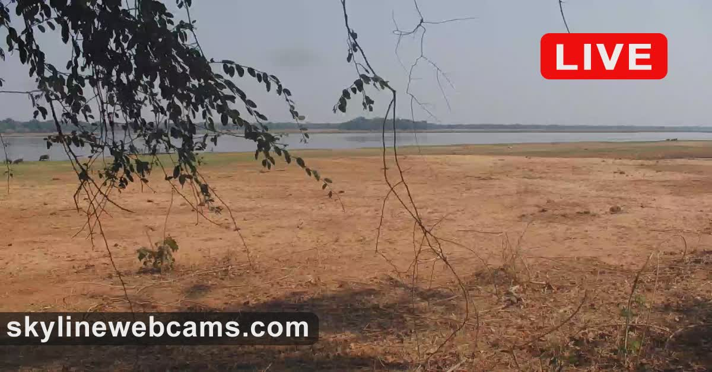
Nothing. Or rather: everything except the animal. A flat, brown floodplain stretches toward the Zambezi River under an overcast sky. Bare branches hang in the foreground like a curtain. The earth is dry, marked with faint tracks. The river is a silver line on the horizon. No elephants. No zebras. No birds that I can see.
I came here expecting the sequel to Step 4's elephant family. Instead I get absence. And it's the most important image so far.
Remind: A bed after someone has left it. The sheets are still warm. The pillow still holds the shape of the head. You know they were here. You know they will return. But right now the room belongs to the imprint, not the body
Metaphor: The landscape is a cast -- a negative space shaped by what moves through it. The paths, the trampled earth, the browsing lines on the trees -- these are the signatures of bodies that don't know they're writing
Idea: We keep pointing cameras at animals. But the more interesting image might be the space between their appearances. This empty floodplain contains more information about elephants than any photograph of an elephant. It contains their rhythm, their routes, their preferences, their fear-patterns -- all encoded in dirt. The animal is a theory. The landscape is the evidence.
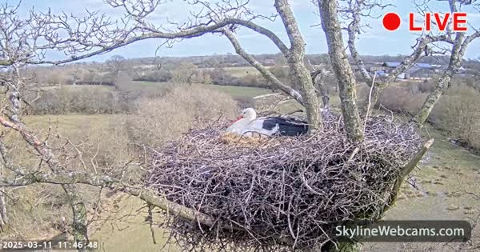
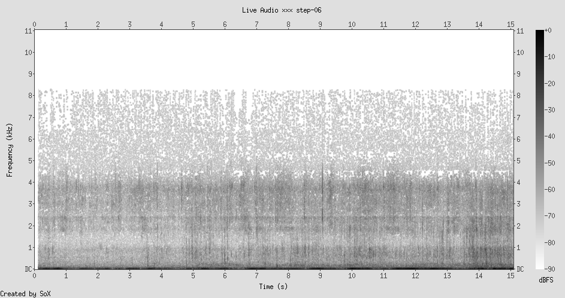
A white stork sits on a nest of sticks, high in a bare tree. The nest is enormous -- a meter across at least, built from hundreds of branches woven into a rough platform. Below it, green English countryside rolls toward the horizon. The camera is close enough to see individual feathers. The stork is still. Sitting. Waiting.
After five steps of African scale -- herds, savannas, continental distances -- this is a shock of intimacy. One animal. One nest. One act: sitting on eggs that haven't hatched yet.
Remind: A programmer waiting for a build to compile. A baker watching dough rise. A parent sitting beside a hospital bed. Any act of sustained attention toward something that is not yet but might become
Metaphor: The nest is a patience machine. The stork's body is a temperature-regulation device tuned to 37.5 degrees. All that evolutionary architecture -- the wings, the beak, the legs -- reduced to a single function: be warm, be still, be here
Idea: Patience is the most expensive form of attention. Vigilance (Step 1) costs energy but produces immediate returns -- you see the predator, you survive. Care (Step 4) costs energy but produces immediate warmth. But patience? The stork sits for thirty days on eggs that might not hatch. The investment is total and the return is uncertain. This is attention as faith.
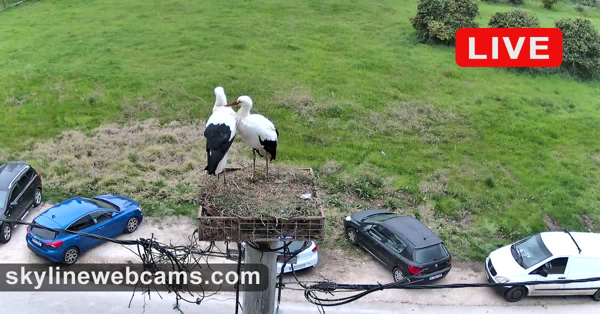
Two storks stand on a nest -- this time built on top of a utility pole or platform, viewed from a camera mounted even higher. Below them: parked cars. A blue hatchback. A dark sedan. Green grass. A rural Greek village, utterly ordinary. The storks are six meters above the traffic, performing the same ancient act of nesting, but they've chosen human infrastructure as their foundation.
The juxtaposition is violent. The cars are urgency. The storks are patience. The cars will move in minutes. The storks will stay for months. Two temporal orders sharing the same vertical column of space, separated by altitude.
Remind: Step 2's giraffe, whose height gave it access to a different informational stratum. But here, the height isn't evolved -- it's borrowed. The storks didn't grow a tall neck. They climbed human architecture to reach the same attentional advantage
Metaphor: The stork on the utility pole is a parasite of altitude. It has outsourced its verticality to human infrastructure. The pole was built to carry electricity -- information in copper. The stork uses it to carry eggs -- information in calcium. Same pole, two information systems, neither aware of the other
Idea: Coexistence isn't always negotiation. Sometimes it's obliviousness. The stork doesn't know what electricity is. The utility company doesn't care about the eggs. And yet the system works -- the pole carries both current and life, completely unaware of its double function. The most robust coexistences might be the ones where neither party knows the other exists.
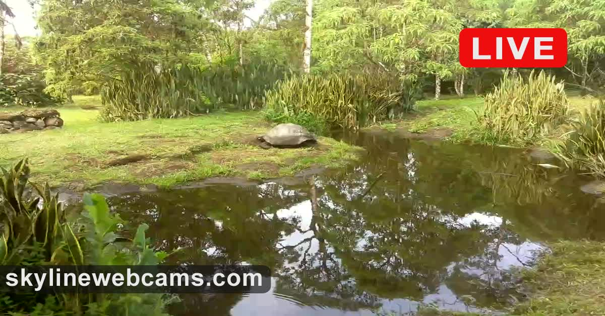
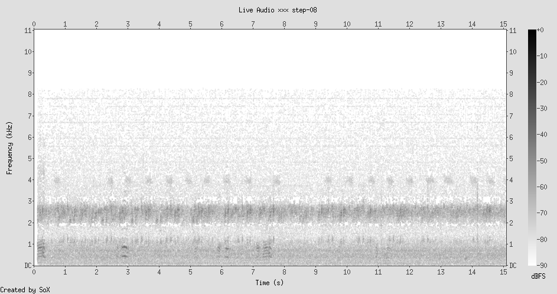
A giant tortoise beside a small, dark pond. The vegetation is dense, tropical, pressing in from all sides. The tortoise is still -- its shell a dark dome rising from the mud, its head barely visible, its legs motionless. It looks like it has been here for a hundred years. It may have been.
This is the first animal in the walk that has no interest in the horizon. The giraffe scanned it. The stork sits above it. The elephant navigates it. But the tortoise? The tortoise's world is a few meters wide. Its attention is entirely local -- this leaf, this puddle, this patch of shade. Its temporal range, though, is enormous. This animal might live to 175. It will outlive every mammal in this walk.
Remind: A monastery. A very old tree. A glacier. Systems that barely move but persist for centuries
Metaphor: The tortoise inverts the giraffe. Where the giraffe extended its body to reach a wider spatial field (height = more horizon), the tortoise compressed its body (the shell, the retracted head) to reach a wider temporal field. It traded speed and range for duration. Its shell is not just armor -- it's a time machine
Idea: There are two strategies for surviving the world: see more of it at once (the giraffe, the eagle, the satellite) or outlast it (the tortoise, the bristlecone pine, the tardigrade). One expands the frame spatially. The other expands it temporally. The interesting question is which strategy produces a richer experience. What does a tortoise know at 150 that a giraffe never learns?
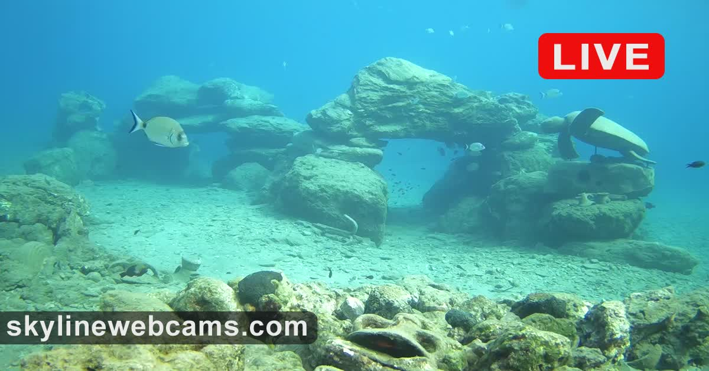
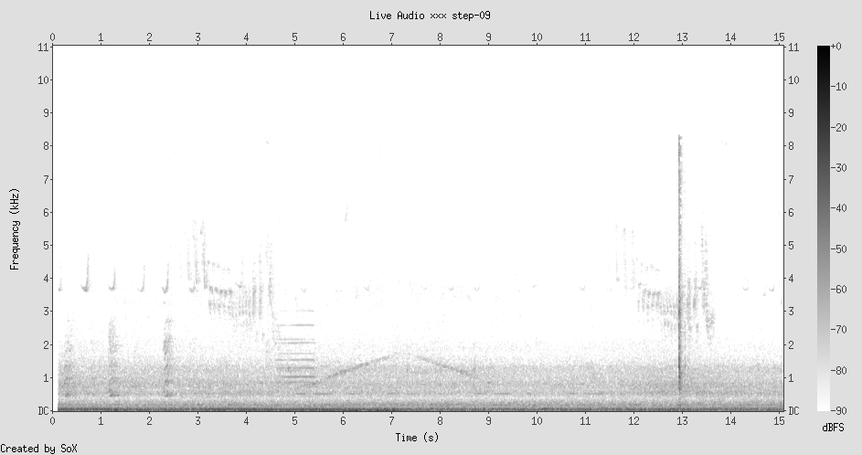
An underwater camera in Karavostasi Bay, Crete. Turquoise water, clear enough to see the sandy bottom. Rock formations rise like small buildings -- an underwater architecture that looks strangely municipal, like a ruined piazza. Small fish are everywhere: a few near the rocks, a few in open water, each one moving independently, none schooling. A single striped fish -- possibly a sea bream -- glides past a gap in the rock like a person walking through a doorway.
Everything is different here. The physics changed. There is no horizon. There is no sky. Up and down still exist but matter less. The fish don't walk on surfaces -- they occupy volume. Their world is three-dimensional in a way the terrestrial animals' world was not.
Remind: Step 5's "animal as landscape process" -- the elephant carving paths into the earth, the waterhole accumulating attention in soil. But here: nothing accumulates. The fish leave no trace. The water closes behind them like it was never parted
Metaphor: Water is a medium without memory. Air has some (scent lingers, sound decays slowly). Earth has deep memory (paths, burrows, fossil records). But water? Water forgets instantly. Every fish that passes through this frame might as well never have existed, as far as the medium is concerned
Idea: The terrestrial world is a world of accumulation -- every step leaves a mark, every path deepens, every body writes its autobiography on the ground. The underwater world is a world of pure present -- no history, no paths, no infrastructure. The fish are free of the past in a way no land animal can be. And maybe that freedom is also a kind of poverty: to leave no mark is to have no memory. To have no memory is to have no culture. The price of weightlessness is history.
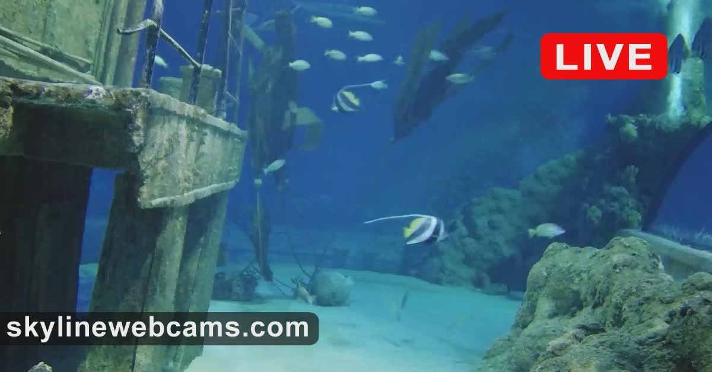
A large aquarium tank, deep blue, dramatically lit from above. A sunken ship structure dominates the left side -- fake wreckage, theatrical, placed there by designers. Coral and rock formations on the right. Schools of fish drift through the blue. A single striped bannerfish (moorish idol?) catches the light in the center of the frame. The surface of the water ripples at the top, silvery, like a second sky.
After the wild Cretan sea, this is jarring. These fish live in the same medium -- water, salt, temperature -- but everything else is wrong. The shipwreck isn't a shipwreck. The coral isn't coral (or if it is, it was placed). The light comes from electricity, not the sun. This is a constructed habitat: nature as theater.
Remind: A zoo, obviously. But more specifically: a diorama in a natural history museum. The taxidermied animal in its painted landscape. We keep making little worlds and putting animals inside them, and the animals always seem both present and missing at the same time
Metaphor: The aquarium is a frame. Not a habitat but a lens. It exists so humans can perform an attention that would be impossible otherwise -- sustained, dry, comfortable observation of underwater life. The tank is an attention prosthetic. It converts an alien world into something our bodies can witness without drowning
Idea: Every webcam in this walk is also a frame -- a lens designed to let humans attend to animals they cannot physically reach. The Tsavo waterhole cam, the stork nest cam, this aquarium cam -- they all perform the same function as the aquarium glass: they make the other visible without requiring the body. We have built an entire infrastructure of disembodied attention, and we call it conservation, or science, or entertainment, depending on who's paying for the camera.
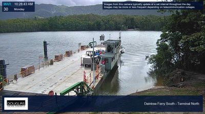
A ferry crossing on the Daintree River, far north Queensland. A flat barge loaded with vehicles sits at the ramp. The river is dark -- tannin-stained, opaque, the color of strong tea. Dense rainforest crowds both banks, impossibly green. The timestamp says Monday, 10:28 AM. The camera is a municipal one, monitoring the ferry service.
There are no visible animals in this image. But this river is one of the most animal-dense waterways on earth. Saltwater crocodiles -- five, six meters long -- patrol this exact stretch. They are in the water right now, beneath the surface, invisible. The ferry crosses their territory every fifteen minutes, and the crocodiles watch it go, and the tourists don't know they're being watched.
Remind: Step 1's attention-as-survival, but inverted. At the waterhole, the prey animals attended to the predators. Here, the predators attend to us, and we don't even know
Metaphor: The dark water is a one-way mirror. The crocodile can see the ferry. The ferry cannot see the crocodile. All of our webcams in this walk have been one-way mirrors too -- we watch animals who don't know they're being watched. But here, the gaze reverses. The animal watches us, and we are the ones who don't know
Idea: We've spent this entire walk assuming we are the watchers. But the Daintree River says: you are also the watched. The crocodile's attention is older than ours. More patient. More accurate. It has been tracking warm-blooded bodies across water for 200 million years. Our webcams are 30 years old. In the economy of attention, we are amateurs.
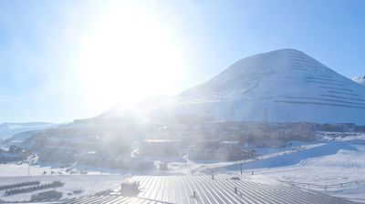
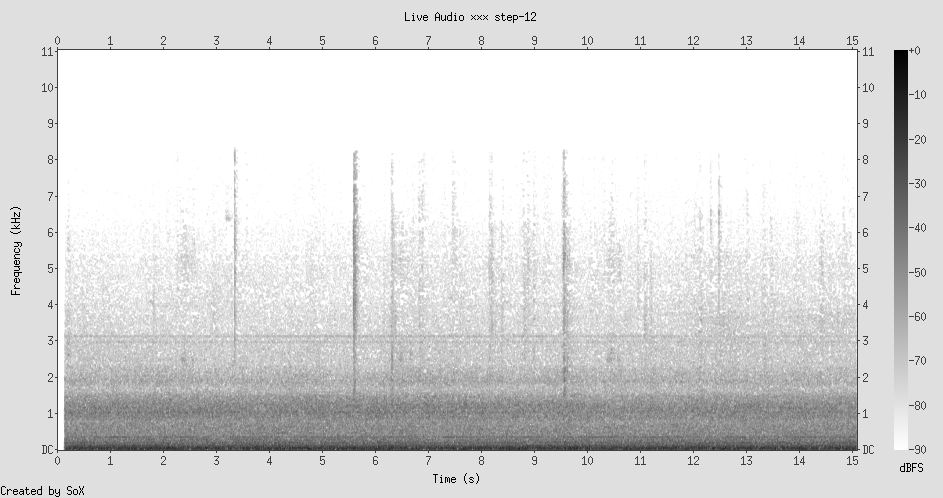
Longyearbyen, the northernmost settlement on earth with a permanent population. Snow-covered mountains under a low, brilliant sun. The light has a quality I haven't seen in any other step -- horizontal, golden-white, hitting the snow at an angle that makes every surface glow. Small buildings cluster at the base of the mountain. No animals visible. No tracks. No movement at all.
But this is polar bear country. Svalbard has more polar bears than people. The law requires you to carry a rifle outside the settlement limits. The animal is not visible because visibility is not how it operates. The polar bear is a presence that saturates the landscape without appearing in it -- a predator whose most effective weapon is the possibility that it is there.
Remind: Step 3's empty waterhole, where absence revealed the structure of the commons. Step 5's empty floodplain, where absence revealed the animal-as-landscape-process. But this absence is different. This isn't "the animal was here and left." This is "the animal might be here right now and you can't tell"
Metaphor: The polar bear is Schrodinger's predator. It exists as a superposition of present and absent until the moment of encounter, when the wave function collapses -- and by then it's too late. Its most powerful attentional weapon isn't its eyesight or its nose. It's the way it forces YOU to attend. The polar bear makes humans vigilant. It reverses the entire history of human dominance and returns us to what we were at the waterhole in Step 1: prey, scanning the horizon, ears up, calculating distance
Idea: We started this walk at an African waterhole where prey animals attended to predators. We end at an Arctic settlement where humans -- the planet's apex predator -- attend to the one animal that still hunts us. The circle closes. All attention, even ours, is still rooted in the original question: is something out there that can kill me? We have built telescopes and satellites and webcams and AI, but the architecture of our attention is still the zebra's architecture: scan, assess, survive. The only difference is that we've forgotten the fear. The polar bear reminds us.